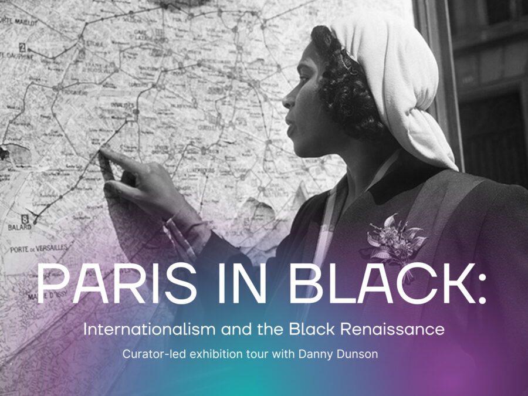

PARIS IN BLACK / CHICAGO: WALKTHROUGH & PUBLIC DIALOGUE
In connection with PARIS IN BLACK: Internationalism and the Black Renaissance, the South Side Community Art Center (SSCAC) invites the public to a curator-led exhibition walkthrough and dialogue at the DuSable Black History Museum and Education Center.
Led by Danny Dunson, Director of Curatorial Affairs and Arts Education at the DuSable and curator of PARIS IN BLACK, this program brings together two sister institutions shaped by shared histories of Black migration, artistic modernism, and cultural exchange between the late nineteenth century and the mid-twentieth century.
PARIS IN BLACK examines how Black artists, writers, and intellectuals navigated the racial constraints of the United States by moving across borders—particularly to Paris—during periods spanning post-Reconstruction, the interwar years, and the rise of modernism. These international movements unfolded alongside the Great Migration, when millions of Black Americans relocated from the South to northern cities like Chicago, reshaping Black cultural life, institutions, and artistic networks.
The exhibition includes select works on loan from SSCAC’s permanent collection and archival holdings, including Archibald Motley, Sunday in the Park (1941). Positioned within the exhibition’s broader exploration of Black internationalism, the work anchors global narratives of movement and exchange within the social life, modernity, and visual culture of Black Chicago.
Founded in 1940, the South Side Community Art Center emerged in direct response to the exclusion of Black artists from mainstream museums and galleries, establishing a permanent site for Black artists working across modernist, social realist, and diasporic traditions within both local and international contexts.
The walkthrough offers a structured way to move through the exhibition together—slowing down with the work and creating space to reflect on artistic movement as both physical migration and aesthetic strategy. Following the walkthrough, participants will gather for a facilitated public dialogue connecting Paris, Chicago, and the enduring role of Black institutions in sustaining artistic life, memory, and possibility.
This program is open to the public. Admission is free.